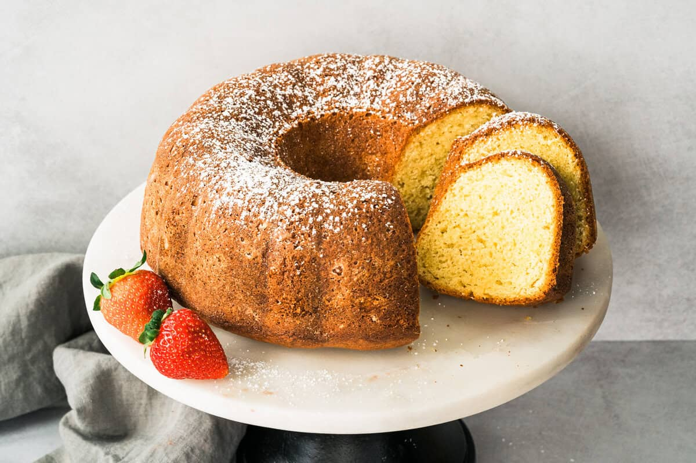

Home
Homemade White Bread

Description
This easy Sour Cream Pound Cake recipe is rich, buttery, and incredibly moist with a perfectly tender crumb. It’s a classic, easy-to-make bundt cake that’s perfect for any occasion.
I’ve always had a soft spot for pound cake, especially when it’s moist, rich, and totally irresistible, like this one! Fun fact: the name “pound cake” comes from way back in the 1700's when bakers used a pound each of butter, sugar, flour, and eggs. That’s a lot of cake! Thankfully, we’ve refined things a bit since then, and the secret to this cake's dreamy texture is sour cream (or full-fat Greek yogurt if that’s what you have on hand). It bakes up thick, golden, and perfectly tender every time. I love it plain, with berries, or even the next day for breakfast.
Ingredients
- 3 cups all-purpose flour
- 1 teaspoon baking soda
- 1/2 teaspoon salt
- 1 cup butter, softened
- 2 cups granulated sugar
- 6 large eggs, room temperature
- 4 teaspoons vanilla extract
- 1 cup sour cream
Instructions
- Preheat oven to 350 degrees F. Grease a bundt pan with nonstick cooking spray.
- In a small bowl, combine the flour, baking soda, and salt. 3 cups all-purpose flour, 1 teaspoon baking soda, ½ teaspoon salt
- In a large mixing bowl, cream the butter and sugar together until light and fluffy. Continue beating and add the eggs, one at a time, scraping bowl after each. 1 cup butter, 2 cups granulated sugar, 6 large eggs
- Stir in the vanilla and sour cream. 4 teaspoons vanilla extract, 1 cup sour cream
- Slowly stir in the flour mixture, just until combined.
- Pour batter into prepared pan and bake for 45-60 minutes or until a toothpick inserted into the center of the cake comes out clean.